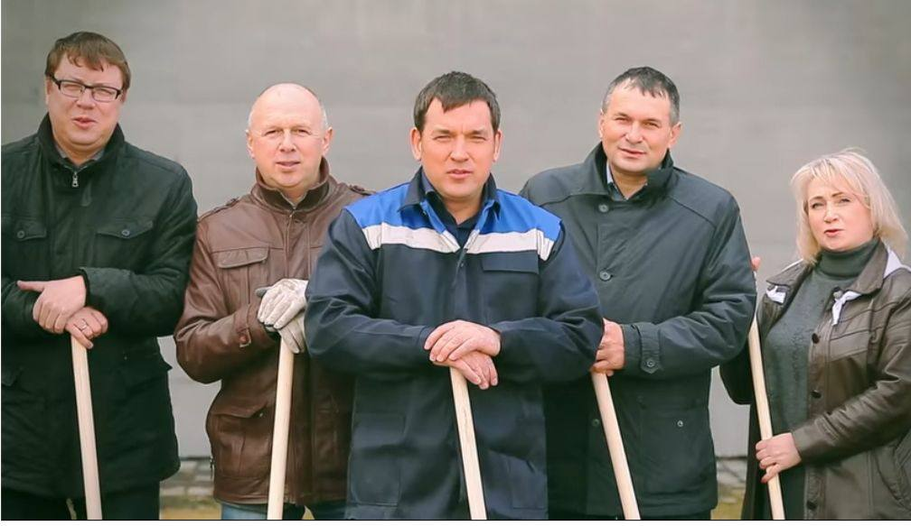
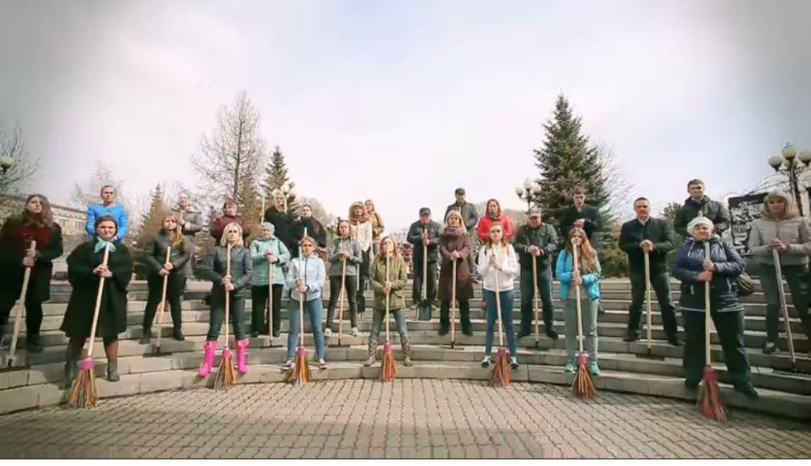
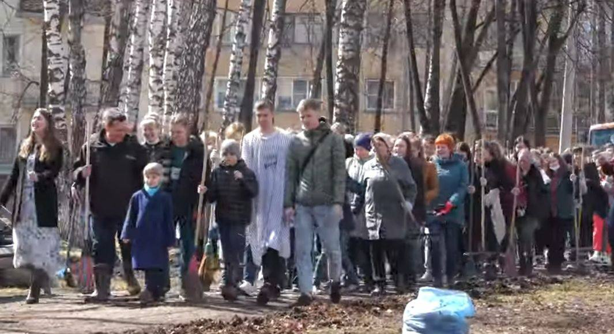

КУЗНЮ ПРИБЕРИТЕ
Основные хэштеги проекта: #Кузнюприберите2022 #Чистыйгородобщеедело

Самый масштабный городской проект
«КУЗНЮ ПРИБЕРИТЕ 6.0 – РЕКОРДЫ ЧИСТОТЫ»
Чистый город – общее дело!
Даты проведения
Самые
массовые
городские субботники пройдут22 апреля и 23 апреля
, в которых может поучаствовать каждый
Успешная практика
Начало положено в 2017
В городе Новокузнецке с 2017 года проходит проект «Кузню приберите» по уборке городских пространств. За 5 лет проведения акции удалось убрать более 2000 тонн мусора, вовлечь порядка 300 организации в проведение субботников. Новокузничане активно включались в очистку социально-значимых территорий от свалок.
Массовость
Основные хэштеги проекта: #Кузнюприберите2022 #Чистыйгородобщеедело
В 2022 году проект пройдет под слоганом: «КУЗНЮ ПРИБЕРИТЕ 6.0 - РЕКОРДЫ ЧИСТОТЫ». Поставим общий рекорд для любимого города!
Участником субботника может стать каждый.
Соберите команду! Выберите место уборки! Проведите субботник, запостите фотографии, можно снять даже видео и выложить в социальные сети. Чтобы все увидели, как вы сделали чистым любимое место, а затем заполните форму участника, которая расположена ниже. Прикрепите ссылки на ваши видео и фото файлы.
В мае будут подведены итоги. Заветные баллы будут начисляться за количество собранного мусора, творческий подход к проведению уборки и т.д.
Рекордсмены субботника, а также самые активные жители города получат призы и подарки!
Кроме того, каждый участник может поделиться с другим своей новой идеей или проектом по сбору вторсырья и на практике рассказать про вторую жизнь вещей. Участвуйте в общем деле! Поставьте свой рекорд чистоты! Сделайте окружающий мир чище! Город ждёт своих героев!
ПОДАРИ РЕКОРДЫ ГОРОДУ
Рекорды чистоты:
Информация будет обновляться.
Наши команды
Фотографии команд.


Поделись своей уборкой
Форма для заполнения (Google форма)
Свяжись с нами!
Узнать подробнеепо всем организационным вопросам можете обращаться на линию «Зеленый телефон»
© КУЗНЮ ПРИБЕРИТЕ: 2022.